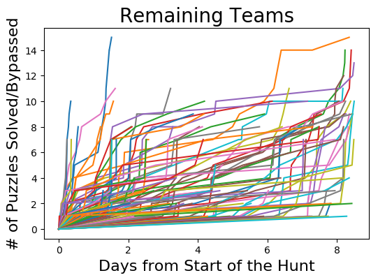
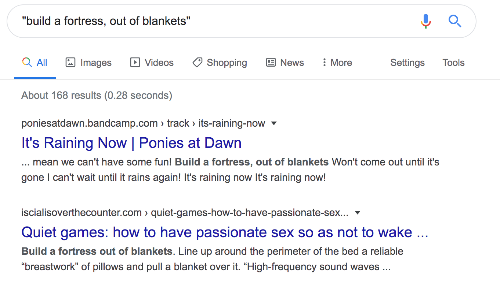

Pre hunt interest form:
“Interesting choice for a theme!”
“Is there an age group this is targeted at?”
“I will be playing ironically.”
Post hunt feedback form:
“Thanks for organizing this!”
“My search history is destroyed.”
“I’ve now started saying ‘everypony’ and my husband isn’t very happy about it.”
♫ Puzzle wrap up puzzle wrap up ♫
When team registration went live for My Little Pony: Puzzles are Magic, we estimated we would get about 200 teams. We were wrong, in a good way. A total of 447 teams signed up, with 304 teams solving a single puzzle, 243 teams solving the first metapuzzle, and 184 teams finishing the entire hunt. Special congratulations to Cardinality for finishing 1st, Friendship is Magma for finishing 2nd, and Tempest Shadow (Berrytwist, Initially) for finishing 3rd. It was very close at the top, with all three teams finishing within 10 minutes of each other.
The story began with Twilight and her friends getting called to solve a friendship problem by a defective Friendship Map. After a kick from Applejack, the Map pointed them to six puzzles, that would tell them where in Equestria they needed to go.
Upon solving these puzzles, they were told they needed to use the TARDIS. They recruited the help of Doctor Whooves, the pony version of the Doctor from Doctor Who. He agreed to help, but needed the Mane 6’s help to fix the TARDIS, by solving the problems of other background ponies around town.
After helping those ponies, the Mane 6 discovered they needed to go back to THE RETURN OF NIGHTMARE MOON, the adventure where the Mane 6 first became friends and stopped eternal night thanks to the six Elements of Harmony. Riding in the TARDIS, they traveled back in time to the series premiere.
On their arrival, they found the Elements of Harmony were taken by someone named T, who came to Equestria in search of six powerful artifacts that, when wielded together, gave their user incredible power. To fix the timeline, they decided to BRING BACK (the) ELEMENTS BY PULLING A TIME HEIST, travelling further back in time to take the Elements from the past. They did so, and met T, who turned out to be Thanos from the Marvel universe. Thanos suspected the Elements of Harmony may have been the Infinity Stones, and although he was wrong, he was planning to take them anyways to consolidate his power.
Challenging Thanos, the Mane 6 harnessed the magic of friendship to attack him with a HARMONIOUS RAINBOW, banishing him from their world. Returning back to The Castle of the Two Sisters, they placed the Elements of Harmony back where they originally were, and after briefly interrogating Doctor Whooves (who knew what they needed to do the whole time), the Mane 6 returned to their time, the friendship problem resolved.
Going in, we had the following design goals.
We felt we did well on 1, 2, 3 and 5, we did okay on 4, and didn’t do very well on 6. Compared to puzzlehunts like Galactic Puzzle Hunt and MUMS Puzzle Hunt, our hunt was shorter and easier, but the puzzles were still quite tricky for novice solvers, and the participants who had the most fun came from the puzzling side, rather than the MLP side.
Initial planning for Puzzles are Magic started in April 2019. The theme was locked in from Day 1, but the story and hunt structure were developed between April and June, with meta construction beginning in June 2019. We started with a soft target of October 2019, to coincide with the series finale of My Little Pony: Friendship is Magic.
During construction, we explicitly tried to treat creating the hunt as a low-stress side project with no hard deadlines. Given a choice between making a puzzle fast, and making a puzzle right, we chose making it right every time. This philosophy led to many delays, and we had to push back the release date to February 2020, but we believe it was the right call.
By the end of July 2019, the story was written up to the end of Round 2, and we finished testsolving the Round 1 and Round 2 metas. The metas were deliberately constructed to have loose answer constraints, to make it easier to assign thematic answers to puzzles. Almost all Round 2 answers and one Round 1 answer changed between meta construction and the final hunt.
Regular puzzle construction began in August. Initially, we asked for puzzles about any topic, pairing them with a pony afterwards. As slots were taken up, we switched to building puzzles that fit ponies which didn’t have puzzles yet. In our opinion, these later puzzles were harder to write, but were also much more thematic, since the restriction of writing the puzzle to the pony forced us into more interesting puzzle territory.
Before creating new puzzles, constructors checked what puzzle types we already had, and avoided creating puzzles too similar to existing ones. We felt we ended up with a good mix of puzzle diversity.
In parallel to regular puzzle construction, we worked on creating the website, implementing the backend for interactive puzzles, and figuring out our endgame story. The website went live in September, with tech work continuing through January. We came up with the Infinity Stone twist in late July, but didn’t write Endgame until November, and Elements War was written in December the night before a group testsolve.
Every puzzle went through at least two testsolves. Solo testsolves happened throughout the year, and we had 3 group testsolves: one in November (through Round 1), one in December (100% forward solving the entire hunt), and one in January (a final factchecking run of our revisions). Our puzzle mechanics were finalized in December, but puzzle editing and finetuning continued through January, with edits happening up through the day before Hunt.
January was devoted almost entirely to post-production of the story and art, and load testing the hunt website. Load testing in particular was a huge time sink, because none of us had any prior experience, and we had to teach ourselves on-the-fly. Unfortunately, this meant we ran out of time to check for printer accessibility, like ensuring page-breaks didn’t appear in the middle of clues or grids, and making CSS colors respected on print. We’re aware of a few teams that hit printing issues, and we’re sorry we didn’t get to it - there were too many fires elsewhere.
Aside from the hunt not introducing many MLP fans to puzzles, we’re pretty happy with how the hunt turned out. We had the help and advice of experienced puzzle writers, but all the main people on Puzzles are Magic were first-time hunt organizers, and we’re glad to see that feedback has mostly been positive.
For theming, we took heavy inspiration from Mark Rosewater’s article “Themes Like Old Times”. Mark Rosewater is a lead designer for Magic: the Gathering, and his game design articles often have good insights on how to create strong experiences.
We followed two guiding principles: weave MLP into everything it can be woven into, and add as many MLP details as possible, even if very few people catch them. Our target was that if you didn’t know anything about My Little Pony, you would still have fun with the puzzles, and nothing would sound out of place, but the more of a fan you were, the more jokes you would get. For example, the story of meeting the Doctor and Derpy was supposed to work whether or not you understood this was a reference to the fan series Doctor Whooves and Assistant, and Anthropology was supposed to work whether or not you understood the Lyra fanon it was playing off of.
We kept our references to the Season 1-5 era of the show and fandom, because we wanted to cast a wide net and we felt that era was the one the most people knew about. Sorry to the Starlight Glimmer fans and Young Six fans.
Six is an important number in My Little Pony, so very early on we decided on two rounds of 6 puzzles: one about the Mane 6, and one about background characters. We didn’t unlock all of Round 2 after teams solved Equestrian Tour, because we wanted to let solvers finish forward solves of leftover Round 1 puzzles without feeling like it was useless to hunt progression.
To us, the distinction between a pile of puzzles and a Mystery Hunt-style puzzlehunt is the meta-strategy for what puzzles to focus on to finish hunt the fastest. This meta-strategizing is only possible when solvers understand the hunt unlock system, so we made an effort to spell out exactly what solvers could do to unlock more puzzles.
For time unlocks, we debated back and forth over the best choice. We knew some teams would just want to see more puzzles, but we also knew some teams didn’t want unlocks they hadn’t earned through their own efforts. After discussing the pros and cons of catering to either side, we realized we could simply ask teams whether they wanted free unlocks or not, only giving free unlocks to teams that wanted them, and giving more hints to teams that didn’t. This worked very well for us, and we’d encourage other hunt organizers to consider this system.
For Round 1, we ordered puzzles by our estimate of difficulty. It turned out we underestimated the technical difficulties for Art of the Dress, and underestimated how much solvers like logic puzzles for Flying High.
Round 2 was only partly ordered by difficulty. Cross Eyed and Imperial Geography were listed first for story reasons, with Cross Eyed first because we knew it was easier. Grindier puzzles were unlocked earlier, because we felt they would be backsolved too frequently if unlocked late. For difficulty, we expected A to Zecora to be hardest and to get backsolved the most, but we’re happy that some teams forward-solved it too.
For story reasons, all of Round 2 needed to be gated behind Equestrian Tour, and all of the endgame needed to be gated behind Seasoned Traveler. To minimize risk of a broken hunt, and to make meta construction easier, we made our metapuzzles straightforward, hiding them behind a hard-unlock gate of 4 solves in that round.
This worked. Most teams that unlocked our metas solved them without issue. However, it was also the root cause of the most common constructive criticism we got: metapuzzles that didn’t feel like metapuzzles. As they got testsolved, we changed their designs to make them easier and easier, and the end result was that both metas were solvable from 0 answers if you understood the puzzle mechanic. We know of at least 2 teams that solved Seasoned Traveler without using the answers at all, only understanding their function after solving the meta.
Given our goal of creating an easier puzzlehunt, and the serial nature of our hunt, we feel the difficulty was correct. However, in focusing on difficulty, we didn’t pay as much attention to whether the puzzle as a whole still felt like a metapuzzle, and it should have been possible to write easy metas that still relied on answers for extraction. We’ll keep this in mind for future puzzle design.
For our hints, because they were one-size-fits-all, we aimed for gentle nudges rather than explicit directions for what to do. We could always turn a nudge into an explicit instruction, but we couldn’t do it the other way around.
We expected teams that wanted more directions would email us directly, and many did so, but a few teams told us they just abandoned the hunt entirely when the given hints didn’t help them get unstuck. Our warnings about slow hint replies were accurate (we’re all in US time zones and work full-time jobs), but this may have scared off teams from emailing us, and we’re considering ways we could have worded this better.
We have no plans to write a second My Little Pony themed puzzlehunt. There’s more puzzle material to mine from My Little Pony, but our guess is that a second MLP hunt would be less thematic and less novel than Puzzles are Magic. The greatest strength of puzzles is that they’re all unique in their own way, and because of this, a puzzlehunt theme works best the first time, and gets weaker on a repeat. You can only introduce solvers to Twilight Sparkle’s Secret Shipfic Folder once, after all. Also, the person in charge of MLP lore (the Horse Whisperer, so to speak) is tired of hunt organization, and is ready to take a break.
Everyone who wrote puzzles for Puzzles are Magic is interested in writing again. It’s unlikely you’ll see another puzzlehunt by the exact same group of people, but many of us are planning to contribute to other puzzlehunts. Keep an eye out - you’ll probably see our fingerprints (hoofprints?) in other hunts.
We plan to keep the website up for the foreseeable future. If you liked our work, you can donate to the hunt here. If you’re looking for a similar hunt experience of about 15 puzzles, Puzzle Potluck 3 is running June 20th, 2020. See Puzzle Hunt Calendar for other puzzlehunts.
In these charts, metas are worth 1 point, and a team gets credit for all puzzles in that round after solving its meta.

We got a lot of survey responses where people said “I don’t really care about the ponies, I’m just here for the puzzles”, and then they had an opinion about who the best pony was. Just saying.
To everyone who wrote in Thanos and Li’l Sebastian: congratulations, you did it. They got more votes than Rarity, one of the Mane 6. The one Rarity fan on staff is sad that happened.
A table showing every team’s progress through the hunt can be found here.
A full activity log can be downloaded here. Let us know if you do something interesting with it!
Stats for each puzzle are linked from their puzzle page, and stats for each team can be found on their team profile page.
Stats for the entire hunt, including backsolve estimates, can be found here.
Some answer submissions we liked are linked here. Don’t feel bad if yours wasn’t picked, we got a lot of submissions.
From hunt staff:
The morning before hunt started, a team emailed us saying our puzzles had leaked early. We all had mini-heart attacks, before we opened the email and saw they had shared a photo of their daughter solving a “spot the differences between the ponies†from a My Little Pony kid’s book.
The day of hunt, this happened.
We made our landing page refresh the page whenever the countdown was 0 seconds or smaller. If it took you > 1 second to load the hunt page, your browser would get stuck in an endless refresh loop. Oops.
The race for 1st place was very exciting. Cardinality and Tempest Shadow (Berrytwist, Initially) solved Seasoned Traveler 5 minutes apart from each other, and we watched their endgame progress with great interest. Tempest Shadow (Berrytwist, Initially) shrunk the lead through Endgame, but then Friendship is Magma blitzed through the final puzzles, with a fastest solve on Endgame and 2nd fastest solve on Elements War, leapfrogging to 2nd place and almost catching Cardinality before they finished.
Art of the Dress
Tempest Shadow (Berrytwist, Initially): “We flipped a coin; one said white+gold, one said blue+black, and one refused to take a side”
Pet-a-muzzle voting white+gold: “Our team of 4 is exactly split 2-2 on this issue but I solved the puzzle, mua-ha-ha.”
furious_acorns voting for white+gold: “We know it’s blue and black!”
Yuki: “UNANIMOUS DECISION OF WHITE AND GOLD”
Kevin: “YANNY”
Friendship is Magma: “We’ve voted, which is surprisingly difficult when the dress literally changes.”
The_underscore_sean_gardiner_fanclub: “The dress is very obviously black and blue”
UrsaCalliope voting blue+black: “If you disagree then you are wrong”
foobar: “lol this is hilarious and yall are awesome”
Thorough Bread: “My decision is final and there are no refunds.”
In Case of Emergency Solve Puzzle: “You should be ashamed for referencing this.”
Gmail auto-reply has some thoughts on a French team’s vote:
Not Quite a Polka
A few teams looking for Neighagra Falls backsolves tried HORSESHOE FALL as an answer. This 1) worked for the meta, 2) was definitely thematic, and 3) was wrong, but 4) we really wish we had used that as the answer.
Yuki: “We had an internal argument about “emmy”. I came up with that answer, but I was convinced it was wrong. So I was saying to my teammate “It’s pronounced “M-E”, not “M-Y”!!! Oh wait, nevermind.”
Applejack’s Game
From testsolving: “Okay, so what’s the apple for AUDIO MANUFACTURERS?”
“Apple? They make speakers and AirPods”
“Wtf it can’t just be Apple”
(After finding McIntosh)
“See it was Apple the whole time”
Penrose Triangulation: “I was working on the Applejack problem with a friend of mine. I offered “most letters from ROYGBIV†as Rainbow Dash’s algorithm, before shooting myself down with a counter-example. My friend immediately took a look and realized it was actually “most unique letters from ROYGBIV”, so I actually kinda helped =D”
HecticPuzzlers: “I spent literally hours browsing through Applejack’s family to identify the various Apples… Until my partner came up to save me from despair and just asked: what about regular apples? Intense facepalming ensued.”
It’s a Long Story
Foals Rush In: ““I just ‘shipped a pony with that apple tree due to being trapped in a storm.†is a real sentence I had to say. My wife now thinks I’ve gone insane. Or at least more insane than she had already thought.”
(That’s really all we wanted out of this puzzle.)
pet-a-muzzle: “We backsolved It’s a Long Story but only because our Brony team member wanted to wait until he had access to his physical Shipfic deck, but we got too far ahead of that.”
🐎🐎🐎 Galloping Trotsteppers 🐎🐎🐎: “The concept of It’s A Long Story (or rather the concept of the associated card game) was so bizarre that it was kind of hilarious to solve, although it took a while to actually do so”
The Map Sent Us Here to Solve a Friendship Puzzle: “thank you for letting me know that this game exists. My spouse is a board game nerd and is chomping at the bit to try TSSSF IRL.”
Keep Puzzling and Nopony Explodes: “My teammate solved It’s a Long Story using the card game on Tabletop Simulator!”
The Key Is Going Slow and Steady
From testsolving:
“LEFTPETS is incorrect”
(Testsolver thinks a bit)
“ANIMALRIGHTS is incorrect”
Hunt staff when teams told us wasps were repelled by cucumbers: “are you serious”
(We made 3 different versions of the diagram during construction, all with a question about cucumbers, and all 3 testsolve groups got the intended letter for wasp, so we were really sad to learn this was ambiguous).
Macadamia: “It took me a whole week to realize that it was a falcon and not an owl”
In Case of Emergency Solve Puzzle: “I had a big argument with my roommate whether one of the images in the puzzle was a falcon or an owl”
(Don’t worry you aren’t alone!)
Friendship is Magma: “I liked the silly setup for Fluttershy’s puzzle, and the silliness in general. The act of doing anything pony-related can’t be done if you take yourselves too seriously”
Tempest Shadow (Berrytwist, Initially): “nobody noticed the bit at the bottom of The Key Is Going Slow And Steady for ages; had we noticed it, we would have saved about 10 minutes and could probably have won.”
Flying High
Hunt staff: “Where are all these CAR??? guesses coming from?”
(After we figure out that CAR are the letters from indexing into the city name)
“Well this puzzle is going to have the highest incorrect guess rate.”
We saw a bunch of teams solve 5 logic puzzles, then brute-force the last number/letter by guessing. Several teams got to “1250F?”, but only one team followed through and guessed all the way to T. Most teams stopped at around K or M. If you’re going to brute force, you have to follow through!
Keep Puzzling and Nopony Explodes: “We knew from the first meta that Flying High needed a solution where the tenth letter was T and related to Manhattan somehow, so we put all our hopes into NEW YORK CITY, but alas!”
idk: “Idk if this is fun, but I submitted 12SOFT and 125OFT for Flying High but not 1250FT, luckily someone else on the team did (especially since your rules seemed to imply that the answer checker would ignore nonalphabetic characters).”
(Our rules used to say we would ignore nonalphabetic characters, but when we decided to confirm cluephrases, we carefully reworded our Rules page to say that every answer only used letters A-Z, but digits 0-9 would still be included before answer checking. We wondered whether teams would figure out we were going to confirm partials from that wording change.)
Equestrian Tour
[pi]: “tfw we guessed so many things related to Los Angeles when it should be Las Vagas”
(You definitely weren’t the only ones.)
Salad Without Dressing 👀: “Not fun story: got trapped on Equestrian Tour looking at dressage, horseraces (did you know Long Branch Stakes and Maid of the Mist Stakes have Wikipedia pages?), Triple Crown races/winners, etc. Thank you actually for not including real-life horseracing, I would much rather learn about the animated version.”
(We actually had a puzzle that used real-life horse races, but ended up cutting it. This was a lucky call, because that puzzle ended up being very similar to the Big Top Carnival meta from this year’s Mystery Hunt. In general, we were happy that none of our puzzles got scooped by Mystery Hunt. Hopefully nobody’s in-progress hunt got scooped by our puzzles.)
Default Team Name: “We solved Equestrian Tour simultaneously on three maps, because everyone considered his method of combining the maps the best.”
There are fixed patterns in all QR codes which aren’t showing up in ours: “We were trying to solve Equestrian Tour, but since only one of us had watched MLP the rest of us got sucked into ‘watching’ the episodes while looking through the Gallery and reading the subtitles. This puzzlehunt was all a plot to get more people into MLP”
Sonic Rainboom: “We have to place a big GER on the inside of something?†“No, duh, we need a place that’s bigger on the inside!”
Time Vultures: “You don’t want to know how much time we spent on this map.”
Dirty Bayes: “One of my teammates was convinced the surprise universe crossover was going to be to the sitcom Friends, not to Dr. Who / Avengers. We were disappointed when the “friendship problem the Mane 6 need to solve†in Equestrian Tour was not in CENTRAL PERK.”
Cross Eyed
This is already mentioned in Cross Eyed’s solution, but by accident, Puzzles are Magic overlapped with Donald Trump’s Senate impeachment trial, and one of our clues was “What could come after impeachment, but so far never has.†This gave us extra reason to watch the trial - not only was it deciding the fate of the presidency, it was also deciding whether we’d have to issue errata!
In Case of Emergency Solve Puzzle: “Crossword clue 44-Down in “Cross-Eyed†is “Setve Bmlaler, for the Ceipplrs.†I deciphered this to “Steve Ballmer, for the cripples†and was thus stuck for half an hour on it, reading articles about how Steve Ballmer ‘crippled’ Microsoft before eventually realizing that “Ceipplrs†anagrammed to “Clippers,†the basketball team he owned.”
Imperial Geography
🐎🐎🐎 Galloping Trotsteppers 🐎🐎🐎: “The moment when a team member went back to look at the clues for Imperial Geography, and we finally read the first clue letters was the biggest collective groan of the whole hunt.”
17th Shard: “As a New Zealander, I appreciated Imperial Geography a lot. Left off of maps, indeed.”
Number Hunting
Pet-a-muzzle: “Number Hunting Bamboozled us with Shadow Gossip”
Pony 🅱️als: “I’m not sure whether this was the intent, but the clue phrase we got out of the yu-gi-oh puzzle had GAY appended to it and we’re still unsure why (not sure whether we just got a bit of our data wrong lol); I do agree with a friend’s hypothesis that it’s because gay people are indeed perfect B)”
Pony 🅱️als: “We were so excited to find the gay Numbers.”
Recommendations
We got a lot of comments along the lines of “wow that music was alright”.
γδβPuzzlers: “Pony music is strangely good”
Les Baguettes Magiques: “Some of that music is catchy and will be joining my playlists.”
In Case of Emergency Solve Puzzle: “I may or may not have enjoyed listening through the songs for that puzzle more than I care to admit.”
maretiME TAil: “I have 2 seconds of ‘it’s raining now’ stuck in my head now “
::🐉: “♪ standing strong so randomly ♫”
Luna🦄🌌🌙: “I spent most of the rest of the Hunt with Recollections as my soundtrack.”
Martians in Exile: “It was an interesting introduction to the fandom. That music puzzle–we had no idea the extent of that…”
Friendship is Tragic: “Really enjoying listening to Replacer - Hello Commander from Ponies at Dawn.”
Dora’s Dutch Backpack: “I just requested my first song at ponyvillefm.com”
Eggplant Parms: “When we were solving recommendations, we conveniently ignored poniesatdawn bandcamp website and found them all through google and youtube… and encountered some interesting search results…”

MAJK: “We missed the obvious answer for Recommendations and interpreted “Blue Hedgehog (5)†as “Sonic Five†leading us to SonicXMLP fanfiction, a sonic vs. rainbow dash cartoon on youtube, and learning about a horsebox truck called the Sonic Five. Only after about 15 wrong answers and almost a day later did we just try putting in “Sonic”.”
One interesting trend we saw was the more a team relied on music-ID apps, the less likely they were to recognize the songs were all from the same album, which made it harder to do the FIND NEXT LYRICS step. We’re still baffled that music-ID apps work for pony music.
A to Zecora
This puzzle was controversial, which we expected. It was mostly backsolved, with some people saying “I was a chem major, and stuff like this is part of the many reasons I avoided biochem”. However, we had other people say “A to Zecora was🔥†or their favorite puzzle of hunt. We’re happy some people had fun with it.
Anthropology
Duck Gizzards: “I predicted before the hunt start that there was gonna be a puzzle about human culture and the answer was gonna be ANTHROPOLOGY. I wasn’t right, but it was pretty good guess lol”
pet-a-muzzle: “Haha, Lyra and hands! That’s hilarious.”
idk: “The volumes to the different audios in anthropology were different so I had to raise the volume for one of them, and the next one I chose was Chandelier which burst my eardrum and the people around me started giggling and looking at me weirdly as they could hear it through the earphones.”
(Oops, sorry about this. We realized that clip was way louder than the rest during hunt, and didn’t want to risk changes to a working puzzle.)
Seasoned Traveler
Kevin: “Solving Seasoned Traveler helped me realize I’d watched season 4, which had completely slipped my mind. I assumed I had stopped watching when they gave Twilight wings.”
(Good thing Twilicorn drama has faded by now…)
Endgame
My Little Puzzle Boat: “the revelation that this was The Greatest Crossover Event of All Time was awesome”
Duck Gizzards: “We solved “Endgame†and then an hour later I went “ooooh those were the Infinity stones!””
Yuki: “One guy on our usual team didn’t want to join this hunt, coz of the MLP theme. He’s a massive avengers nerd though. So when the final reveal appeared, we were all saying “What a twist!””
Attack of the Ridiculously Long Team Name: “I felt quite proud when I realised what the stones were after my team and I had been puzzling over it for a while. “The Elements are different in the movie? Which movie? WHY IS APPLEJACK’S GEM GREEN???””
Elements War
Low Expectations: “5 of us were working on the endgame late at night. We were on the last puzzle and a bit stuck on how to use the numbers after doing the math problem. In a moment of silence one teammate loudly blurted out “..and what the heck is an Element War”. The lightbulb suddenly went off simultaneously on everyone’s heads.”
General
A few teams told us they starting watching My Little Pony: Friendship is Magic before the hunt (to study), or after the hunt (because they were curious). To be honest, we didn’t care whether solvers got into MLP or not, we just wanted to make a MLP-themed puzzlehunt, but it’s cool that people decided to check out the show.
Trundling On: “I have now learnt much more about ponies through the week - to the amusement of my young daughter!”
Just-Us League: “Not a brony myself, but doing this hunt allowed for some bonding moments with my young niece.”
(We’re really happy our hunt helped people connect this way.)
Cardinality: “I was going to read the story while solving, but I realised that the race for 1st was really tight - turns out if we’d spent 3 minutes reading the story, Friendship is Magma would have caught us.”
HecticPuzzles: “My soul is pony-scarred for life because of you.”
Penrose Triangulation: “sheep are cuter than ponies”
(excuse me what)
There are fixed patterns in all QR codes which aren’t showing up in ours: “this is a cruel scheme to get puzzlehunters into MLP and it worked”
Keep Puzzling and Nopony Explodes: “According to all known laws of aviation, there is no way a pegasus should be able to fly. The pegasus, of course, flies anyway, because pegasi don’t care what earth ponies think is impossible.”
Puzzle Authors: Alex Irpan, Nishant Pappireddi, Anderson Wang, Charles Steinhardt, one anonymous person
Additional Testsolvers: Robin Hui, Diyang Tang, Jessica Wang, Alison Miller, Kevin Carde, Aaron Pixton, Emily M, Andrew Lin, Patrick Xia, Alex Pei, Eggy Chen, Bryan Lee, George Li, Joyce Wu, Zizhuang Yang, Florielle Love, Jitu Das, Jonathan Hwang, Josh Alman
Special thanks to Robin for testsolving every puzzle, including the broken ones. Imagine solving Anthropology, where a coding bug made activated cells appear identical to unactivated ones, the feedback didn’t tell you it was taking the sum, and you weren’t given any starting numbers.
Hints: Alex Irpan, Nishant Pappireddi, Anderson Wang
Story, Tech, HTML Conversion, Art Sourcing: Alex Irpan
None of the art for this hunt would have been possible without the MLP fan community. Through a mix of HD screenshots, HD video clips, and a large fan artist community, we were able to find art assets for everything we needed, and for that, we thank them.
The following images were taken from HD screenshots found from the MLP wiki:
The following video clips were taken from MLP episodes:
The following images were taken or modified from fan artists: